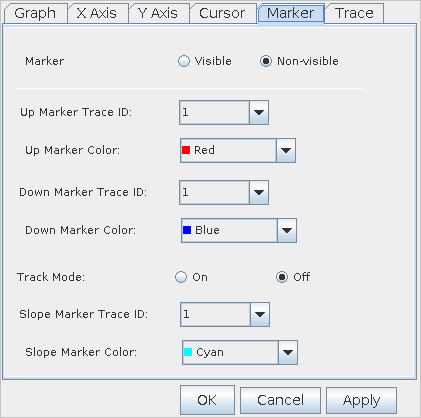

Marker Properties

Item |
Description |
|---|---|
Marker |
Make the markers visible or non-visible with the corresponding check boxes (Visible/Non-visible). |
Trace ID |
If the selected Data Display Panel has multiple traces (overlaid waveforms), you must specify on which trace the markers are placed. The positions of "Up Marker" and "Down Marker" displayed based on the specified trace ID. |
Up Marker Color |
Specify a color of the marker in this combo box. |
Down Marker Color |
Specify a color of the marker in this combo box. |
Track Mode |
If the "Track Mode" is on, the "Up Marker" and "Down Marker" will be synchronized. This means the space between these markers becomes constant at all times. |
| Slope Marker Trace ID | If the selected Data Display Panel has multiple traces (overlaid waveforms), you must specify on which trace the slope marker is placed. |
| Slope Marker Color | Specify a color of the slope marker in the combo box. |
Note Marker Visible/Non-Visible and Track
Mode do not work for the slope marker.